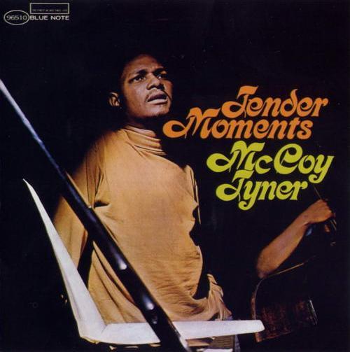

CD
Tender Moments
McCoy Tyner
Media: — · Sleeve: No Cover
—
Personal
Discogs SuggestedCA$37.16
Discogs MedianCA$37.16
Discogs HighCA$37.16
- Physical Copy ID
- BB-CD-3079
- Year
- 2004
- Label
- Blue Note
- Catalog #
- 7243 5 96510 2 6
- Country
- Europe
- Genre / Style
- Jazz · Post Bop, Modal, Hard Bop
No cover